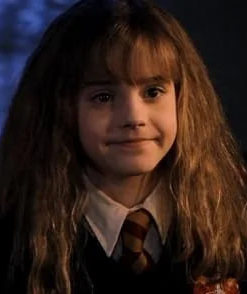
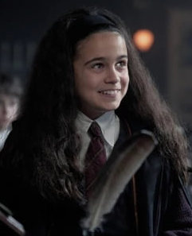

Adaptacja filmowa

Filmowa Hermiona (Emma Watson) jest przedstawiona niemal jako postać idealna — błyskotliwa, zawsze opanowana i przejmująca wiele najlepszych kwestii oraz pomysłów od innych bohaterów (w tym od Rona). Jej wizerunek jest bardzo wygładzony i pozbawiony większych wad.
Adaptacja serialowa

Serial ma szansę przywrócić Hermionie jej książkowy, bardziej autentyczny charakter. Oczekujemy postaci bardziej upartej, czasem zbyt dogmatycznej, wałkującej zasady i wpadającej w panikę w stresujących sytuacjach, co czyni ją znacznie bardziej ludzką i ciekawą.